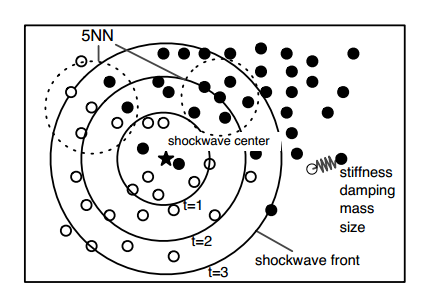
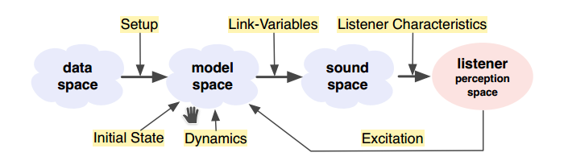

from “The Sonification Handbook”: https://sonification.de/handbook/chapters/chapter16/#S16.4
MBS - creation of processes that evolve in time to systematically sonify data
–> data itself doesn’t need to have timely dimension --> even better without, else parameter mapping or similar recommended
–> excitation needed to start sounding: a dynamic sound that changes in time
it’s a lot about the nature of the data (structure and distribution)
best analogy: like a box that one tries to guess the content of by shaking it: excitation, direct audible response, many possibilities of handling
–> gradually build up a mental representation
in short:
Model-Based Sonification (MBS) is defined as the general term for all concrete sonification techniques that make use of dynamic models which mathematically describe the evolution of a system in time, parameterize and configure them during initialization with the available data and offer interaction/excitation modes to the user as the interface to actively query sonic responses which depend systematically upon the temporal evolution model.1
The data neither determine the sound signal (as in audification) nor features of the sound (as in parameter mapping sonification), but instead they determine the architecture of a ‘dynamic’ model which in turn generates sound. 2
in order to be able to get a representative mental picture of the data’s nature, the following conditions should be provided:

3
scatter plot of data
–> excite a shock wave in data space
–> wave front excites mass-spring systems: each point is mass-spring system that oscillates once it is hit by shock wave
provides information about data density and clustering
parameters --> stiffness / damping of individual springs

2
(we have seen the data sonogram)
they all base on scatter plots --> other plots thinkable, too?
data points located in 3D-space around the user
moving a tracked planar object excites datapoints (as mass-spring system) when hit
sound example S16.3: Tangible Data Scanning Video
fixed “molecules” (data points)
excitement: mouse click places crystallization seed
“the eigenvalues determine the harmonic series while the overall variance determines the size and thereby the fundamental frequency of the sound” 4
growth --> pitch drops, brightness signature modulates
sound example S16.5: Data Crystallization Sonification
suitable for clustering of data and local dimensionality structure of clusters
data points as “neurons”, each contributing to the overall sound:
edges add up to overall restoring force --> higher frequency of that neuron oscillating around its position
each neuron creates a sine wave, number of edges influencing the stiffness
allowing perception of overall connectivity of the graph structure
also reveals overfitting (shows where randomness of data is made audible instead of underlying relationship)
media file S16.9: video of a GNG growth for a 2d spiral data set
what data suitable? any examples?
what sensors suitable?
what plot types interesting?
[1] - Herrmann, T., Hunt, A., Neuhoff, J. G. (2011): The Sonification Handbook. 403. Berlin: Logos Publishing House.
[2] - ibid, 404.
[3] - ibid, 409.
[4] - ibid, 411.